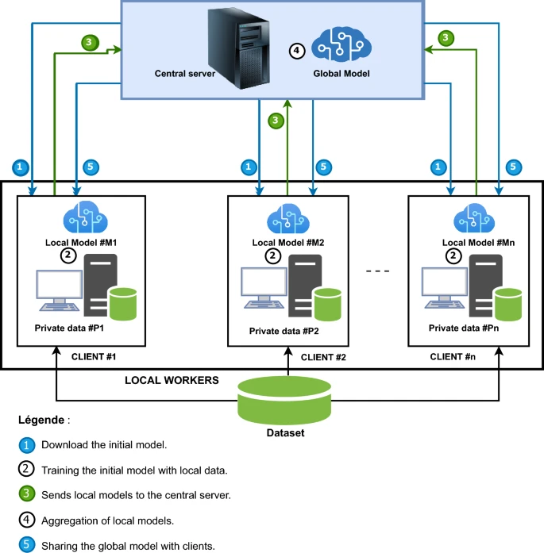

Crop Disease Detection Using CNNs and Federated Learning
Home
Methods
Results
Conclusion
References
Algorithms
Methods
1. Data Collection
The dataset used in this research is sourced from the
PlantVillage platform
.
Example of Preprocessing Pipeline
